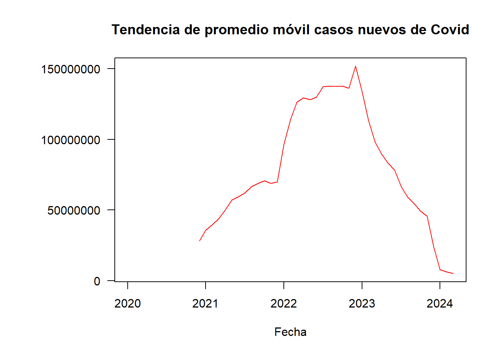
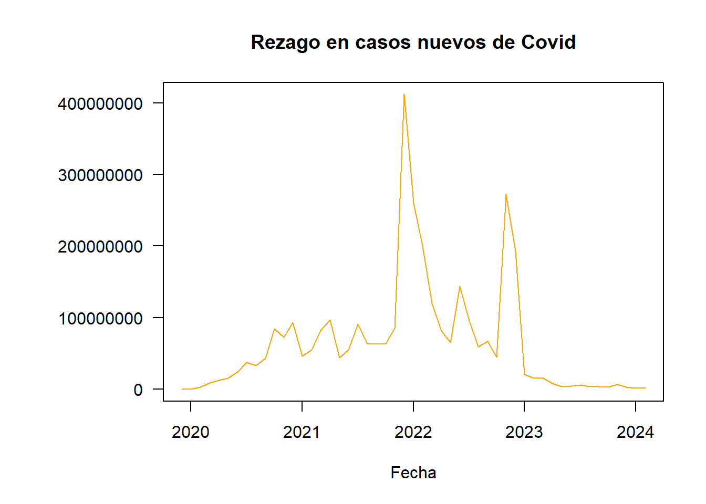

2 Análisis Exploratorio de datos:
Iniciamos explorando el conjunto de datos seleccionado, identificando tipos de variables y valores nulos o perdidos:
2.1 Exploración y preprocesamiento del dataset:
Inicialmente se exploró el contenido del dataframe identificando 67 variables con 390659 observaciones de pacientes con diagnóstico de covid desde enero del año 2020 hasta febrero del año 2024. Debido a la extensión de esta información, no se presenta el resultado de la función str.
se continúa con un resumen estadístico que igualmente se decide no presentar dada la extensión de las variables. Llama la atención que se identifica que la variable date está en formato character, se seleccionan solo variables de interés por el momento: date, continent, location, date,new_cases y new_deaths
## 'data.frame': 390659 obs. of 5 variables:
## $ continent : chr "Asia" "Asia" "Asia" "Asia" ...
## $ location : chr "Afghanistan" "Afghanistan" "Afghanistan" "Afghanistan" ...
## $ date : chr "2020-01-05" "2020-01-06" "2020-01-07" "2020-01-08" ...
## $ new_cases : num 0 0 0 0 0 0 0 0 0 0 ...
## $ new_deaths: num 0 0 0 0 0 0 0 0 0 0 ...Se confirma que ya están definidas las variables seleccionadas, ahora se estructura en formato fecha la variable date:
## continent location date new_cases
## Length:390659 Length:390659 Min. :2020-01-01 Min. : 0
## Class :character Class :character 1st Qu.:2021-01-27 1st Qu.: 0
## Mode :character Mode :character Median :2022-02-16 Median : 0
## Mean :2022-02-16 Mean : 8654
## 3rd Qu.:2023-03-08 3rd Qu.: 0
## Max. :2024-04-15 Max. :44236227
## NA's :10991
## new_deaths
## Min. : 0.00
## 1st Qu.: 0.00
## Median : 0.00
## Mean : 77.49
## 3rd Qu.: 0.00
## Max. :103719.00
## NA's :10668Se identifica que ya la fecha se encuentra en el formato indicado, iniciando por el 01 de enero de 2020 y terminando el 15 de abril de 2024 (se actualiza con frecuencia). En la variable nuevos casos se identifica que el 50% de los datos corresponden a 0 pacientes y que hay un valor extremo de 44236227, adicionalmente 10.991 NAs. En la variable nuevas muertes, de igual manera el 50% de las fechas hubo 0 muertes, tiene un valor extremo de 103719 y cuenta con 10.668 NAs.
a continuación se grafican los datos nulos para realizar la depuración de los casos y muertes en valores NA.
Se confirma que las dos variables referidas anteriormente contienen datos NA, continente, location y date tienen datos completos.
Según la descripción de las variables en la base de datos original, cuando ocurre un cambio negativo en los datos diarios reportados sobre casos o muertes confirmadas debido a una corrección de datos, en lugar de mostrar un número negativo (lo cual no tendría sentido en este contexto), el valor se establece como “NA” (no disponible) para indicar que la información no está disponible o no es aplicable en esa situación.
En casos excepcionales en los que nuestra fuente de casos y muertes confirmados informa un cambio diario negativo debido a una corrección de datos, configuramos la métrica correspondiente ( new_cases y new_deaths) en NA.
Debido a lo anterior, se decide eliminar los datos como NA dado que no se tuvo información para esas fechas y no tiene sentido aplicar una imputación dado que no corresponden a 0 casos. Sin embargo, solo se eliminan cuando ambas variables contienen NA.
covid <- subset(covid, !is.na(new_cases) | !is.na(new_deaths))
library(dplyr)
grafico <- md.pattern(covid, rotate.names = TRUE)Quedan eliminados las fechas en las cuales hay NA tanto en nuevos casos como en nuevas muertes.
2.2 Estructura y exploración de datos en serie de tiempo:
Se realiza una agrupación de los nuevos casos de covid por mes y se calcula la suma de ‘valor’
datos_agrupados_casos <- aggregate(new_cases ~ format(date, "%Y-%m"), data = covid, sum)
# Se Renombra la columna resultante
colnames(datos_agrupados_casos) <- c("Mes", "Total")
print(datos_agrupados_casos)## Mes Total
## 1 2020-01 8140
## 2 2020-02 305693
## 3 2020-03 2774974
## 4 2020-04 8618144
## 5 2020-05 12839860
## 6 2020-06 15852034
## 7 2020-07 24432242
## 8 2020-08 37568841
## 9 2020-09 33477437
## 10 2020-10 43233927
## 11 2020-11 84396057
## 12 2020-12 72463292
## 13 2021-01 92905629
## 14 2021-02 46698894
## 15 2021-03 55239123
## 16 2021-04 82184783
## 17 2021-05 97178712
## 18 2021-06 43778474
## 19 2021-07 54942174
## 20 2021-08 91154888
## 21 2021-09 63275828
## 22 2021-10 62902229
## 23 2021-11 63733746
## 24 2021-12 85019217
## 25 2022-01 411909030
## 26 2022-02 259990699
## 27 2022-03 200032442
## 28 2022-04 119360645
## 29 2022-05 81377207
## 30 2022-06 65532651
## 31 2022-07 143781254
## 32 2022-08 95236731
## 33 2022-09 59736672
## 34 2022-10 67234159
## 35 2022-11 44976971
## 36 2022-12 272018579
## 37 2023-01 192447693
## 38 2023-02 20376737
## 39 2023-03 15441982
## 40 2023-04 15183704
## 41 2023-05 7952298
## 42 2023-06 3883854
## 43 2023-07 4632445
## 44 2023-08 6367920
## 45 2023-09 3741520
## 46 2023-10 3446304
## 47 2023-11 3431653
## 48 2023-12 7072238
## 49 2024-01 2726825
## 50 2024-02 1400012
## 51 2024-03 1401727Se confirma que se realizó la operación y se le asigna formato de fecha a la variable mes, no se utiliza zoo dado que los valores faltantes no son periódicos ni sistemáticos, entonces, al tener los datos NA ya eliminados, se aplica ts:
datos_agrupados_casos$Mes <- as.Date(datos_agrupados_casos$Mes, format = "%Y-%m")
# se establece la fecha de inicio y la frecuencia por meses
indice_casos.ts<-ts(datos_agrupados_casos$Total,start = c(2020,1), frequency = 12)
(indice_casos.ts)## Jan Feb Mar Apr May Jun Jul
## 2020 8140 305693 2774974 8618144 12839860 15852034 24432242
## 2021 92905629 46698894 55239123 82184783 97178712 43778474 54942174
## 2022 411909030 259990699 200032442 119360645 81377207 65532651 143781254
## 2023 192447693 20376737 15441982 15183704 7952298 3883854 4632445
## 2024 2726825 1400012 1401727
## Aug Sep Oct Nov Dec
## 2020 37568841 33477437 43233927 84396057 72463292
## 2021 91154888 63275828 62902229 63733746 85019217
## 2022 95236731 59736672 67234159 44976971 272018579
## 2023 6367920 3741520 3446304 3431653 7072238
## 2024Cálculo de Promedio móvil simple de nuevos casos con ventana de 12 periodos (para una tendencia anual):
##
## Attaching package: 'zoo'## The following objects are masked from 'package:base':
##
## as.Date, as.Date.numericpromedio_movil_tendencia <- rollmean(indice_casos.ts, k = 12, align = "right", na.pad = TRUE)
par(las=1, mar = c(5, 8, 4, 2) + 0.1)
options(scipen = 999) # Desactivar la notación científica
plot(promedio_movil_tendencia, type = "l", col = "red",main = "Tendencia de promedio móvil casos nuevos de Covid",xlab = "Fecha", ylab = "", las = 1)
En la gráfica se observa que desde el año 2021, la tendencia de nuevos casos de COVID 19 está en aumento con un pico a inicio del año 2023, a partir del cual inicia el descenso marcado.
A continuación se calcula el Promedio móvil simple con ventana de 3 periodos (para una estacionalidad trimestral):
promedio_movil_estacionalidad <- rollmean(indice_casos.ts, k = 3, align = "right", na.pad = TRUE)
par(las=1, mar = c(5, 8, 4, 2) + 0.1)
plot(promedio_movil_estacionalidad, type = "l", col = "green",main = "Estacionalidad en casos nuevos de Covid",xlab = "Fecha", ylab = "", las = 1)Con el cálculo del promedio móvil de 3 puntos, cada punto de la gráfica es el promedio de tres puntos consecutivos en la serie de tiempo original. Con align = “right”, el promedio móvil se alinea con el último de los tres puntos. Esto ayuda a suavizar la serie, lo que significa que los picos y valles se suavizan para resaltar tendencias subyacentes. Esto es útil para identificar tendencias generales o patrones en la serie de tiempo que podrían no ser evidentes en la serie original, más volátil.
Al observar la gráfica, no se identifican patrones que ocurran en intervalos regulares del tiempo. Se puede calcular autocorrelación para confirmarlo.
Este grafico muestra los coeficientes de autocorrelación para diferentes retardos (lags) de la serie de tiempo. Interpretación:
Líneas Hacia Arriba y Hacia Abajo: Las barras hacia arriba indican autocorrelación positiva en ese retardo, lo que significa que los valores pasados tienen una relación positiva con los valores actuales. Las barras hacia abajo indican autocorrelación negativa, lo que significa que los valores pasados tienen una relación negativa con los valores actuales. En la gráfica se observa barras que empiezan hacia arriba y luego hacia abajo, podría indicar un cambio en el patrón de correlación a medida que aumenta el retardo. Esto puede significar que la relación entre los valores pasados y actuales cambia de positiva a negativa.
Tamaño de las Barras: El tamaño de las barras representa la magnitud de la correlación entre los valores de la serie con un retardo específico. Las barras más altas indican una correlación más fuerte.
Estacionalidad: Si hay un patrón periódico en el gráfico, donde las barras suben y bajan en intervalos regulares, es un indicio de estacionalidad. En este caso, no hay un patrón periódico, lo que nos confirma la idea de no estacionalidad.
Significancia Estadística: Las líneas punteadas horizontales representan intervalos de confianza. Las barras que sobrepasan estas líneas indican autocorrelación significativa, la cual se presentó al inicio del periodo solamente.
Cálculo del promedio móvil de rezago con ventana de 1 periodo
promedio_movil_rezago <- stats::lag(indice_casos.ts, 1)
par(las=1, mar = c(5, 8, 4, 2) + 0.1)
plot (promedio_movil_rezago, type = "l", col = "orange",main = "Rezago en casos nuevos de Covid",xlab = "Fecha", ylab = "", las = 1)
En la gráfica obtenida se encuentra la serie rezagada desplazada a la derecha en comparación con la serie original. En una gráfica posterior se generará una comparación entre la serie rezagada con la original.
Gráfico de la serie de tiempo original junto con los promedios móviles:
options(scipen = 999)
par(las=1, mar = c(5, 8, 4, 2) + 0.1) # Configura el estilo de la etiqueta del eje y en horizontal
plot(indice_casos.ts, main = "Serie de Tiempo Promedios Móviles casos nuevos por Covid 19",
xlab = "Fecha", ylab = "", col = "blue")
lines(promedio_movil_tendencia, col = "red")
lines(promedio_movil_estacionalidad, col = "green")
lines(promedio_movil_rezago, col = "orange")
legend("topleft", legend = c("Serie de Tiempo", "Promedio Móvil Tendencia", "Promedio Móvil Estacionalidad", "Promedio Móvil de Rezago"),
col = c("blue", "red", "green", "orange"), lty = 1)De acuerdo a la gráfica anterior con promedios móviles de casos de covid, se concluye que el rezago muestra la observación que ocurre antes la observación de la serie de tiempo y se observa un paralelismo en ambos promedios. En la ocurrencia de casos nuevos se observan dos grandes picos a inicios del año 2022, al finalizar el año 2022 y al iniciar el 2023.
Desde sus inicios hasta el año 2023 la tendencia de casos nuevos por covid estuvo en aumento, a partir de ahí hasta el 2024 se ha observado un descenso. No se identificó estacionalidad.
## [1] "ts"## [1] 2020 1## [1] 2024 3A continuación se realiza el mismo proceso exploratorio con los datos de nuevas muertes de covid por mes.
# Agrupar por meses y calcular la suma de 'valor'
datos_agrupados_muertes <- aggregate(new_deaths ~ format(date, "%Y-%m"), data = covid, sum)
# Renombrar la columna resultante
colnames(datos_agrupados_muertes) <- c("Mes", "Total")
print(datos_agrupados_muertes)## Mes Total
## 1 2020-01 254
## 2 2020-02 9645
## 3 2020-03 169353
## 4 2020-04 783277
## 5 2020-05 762124
## 6 2020-06 582743
## 7 2020-07 652704
## 8 2020-08 882419
## 9 2020-09 647771
## 10 2020-10 648245
## 11 2020-11 1408864
## 12 2020-12 1422602
## 13 2021-01 2056207
## 14 2021-02 1278927
## 15 2021-03 1071994
## 16 2021-04 1400807
## 17 2021-05 1806116
## 18 2021-06 1045066
## 19 2021-07 941080
## 20 2021-08 1393925
## 21 2021-09 1000248
## 22 2021-10 1018702
## 23 2021-11 867405
## 24 2021-12 843966
## 25 2022-01 1132956
## 26 2022-02 1180801
## 27 2022-03 738737
## 28 2022-04 367200
## 29 2022-05 261842
## 30 2022-06 161709
## 31 2022-07 311910
## 32 2022-08 277670
## 33 2022-09 193437
## 34 2022-10 240311
## 35 2022-11 172093
## 36 2022-12 247011
## 37 2023-01 359393
## 38 2023-02 391301
## 39 2023-03 113556
## 40 2023-04 114315
## 41 2023-05 65454
## 42 2023-06 35207
## 43 2023-07 23744
## 44 2023-08 26800
## 45 2023-09 37567
## 46 2023-10 58991
## 47 2023-11 45930
## 48 2023-12 76557
## 49 2024-01 61521
## 50 2024-02 32761
## 51 2024-03 23634Se da formato de fecha a los datos:
datos_agrupados_muertes$Mes <- as.Date(datos_agrupados_muertes$Mes, format = "%Y-%m")
# se establece la fecha de inicio y la frecuencia por meses
indice_muertes.ts<-ts(datos_agrupados_muertes$Total,start = c(2020,1), frequency = 12)
(indice_muertes.ts)## Jan Feb Mar Apr May Jun Jul Aug Sep
## 2020 254 9645 169353 783277 762124 582743 652704 882419 647771
## 2021 2056207 1278927 1071994 1400807 1806116 1045066 941080 1393925 1000248
## 2022 1132956 1180801 738737 367200 261842 161709 311910 277670 193437
## 2023 359393 391301 113556 114315 65454 35207 23744 26800 37567
## 2024 61521 32761 23634
## Oct Nov Dec
## 2020 648245 1408864 1422602
## 2021 1018702 867405 843966
## 2022 240311 172093 247011
## 2023 58991 45930 76557
## 2024Promedio móvil simple con ventana de 12 periodos (para una tendencia anual)
promedio_movil_tendenciaM <- rollmean(indice_muertes.ts, k = 12, align = "right", na.pad = TRUE)
par(las=1, mar = c(5, 8, 4, 2) + 0.1)
plot(promedio_movil_tendenciaM, type = "l", col = "red",main = "Tendencia de promedio móvil Muertes por Covid",xlab = "Fecha", ylab = "", las = 1)La tendencia de muertes por covid está incrementándose entre el año 2021 y 2022, a partir de ahí inicia su descenso, es probable que se relacione con un mejor conocimiento sobre el proceso de la enfermedad, el efecto de la vacunación, sin embargo, no es posible afirmarlo solo con los datos con que contamos en este dataset.
Promedio móvil simple con ventana de 3 periodos (para una estacionalidad trimestral)
promedio_movil_estacionalidadM <- rollmean(indice_muertes.ts, k = 3, align = "right", na.pad = TRUE)
par(las=1, mar = c(5, 8, 4, 2) + 0.1)
plot(promedio_movil_estacionalidadM, type = "l", col = "green",main = "Estacionalidad en Muertes por Covid",xlab = "Fecha", ylab = "", las = 1 )Al observar la gráfica, no se identifica con claridad una estacionalidad, se calcula autocorrelación:
Líneas Hacia Arriba y Hacia Abajo: Las barras hacia arriba indican autocorrelación positiva en ese retardo, lo que significa que los valores pasados tienen una relación positiva con los valores actuales. Las barras hacia abajo indican autocorrelación negativa, lo que significa que los valores pasados tienen una relación negativa con los valores actuales. Similar a la ocurrencia de casos nuevos, En la gráfica de mortalidad se observa barras que empiezan hacia arriba y luego hacia abajo, podría indicar un cambio en el patrón de correlación a medida que aumenta el retardo. Esto puede significar que la relación entre los valores pasados y actuales cambia de positiva a negativa. Los valores negativos que no son significativos probablemente indican ruido o variaciones aleatorias en la serie
Tamaño de las Barras: El tamaño de las barras representa la magnitud de la correlación entre los valores de la serie con un retardo específico. Las barras más altas indican una correlación más fuerte, las cuales se observan hasta el lag 7 sobrepasando las líneas de significancia, esto sugiere que hay una influencia positiva en la serie de tiempo que dura hasta 7 periodos (meses)
Estacionalidad: No se observa un patrón periódico en el gráfico, donde las barras suben y bajan en intervalos regulares, lo que nos confirma la idea de no estacionalidad.
Significancia Estadística: Las líneas punteadas horizontales representan intervalos de confianza. Las barras que sobrepasan estas líneas indican autocorrelación significativa, la cual se presentó al inicio del periodo en los primeros 7 lags, a partir de ahí, la autocorrelación disminuye y ya no es estadísticamente significativa.
Cálculo del promedio móvil de rezago con ventana de 1 periodo:
promedio_movil_rezagoM <- stats::lag(indice_muertes.ts, 1)
par(las=1, mar = c(5, 8, 4, 2) + 0.1)
plot(promedio_movil_rezagoM, type = "l", col = "orange",main = "Rezago en Muertes por Covid",xlab = "Fecha", ylab = "", las = 1)Como ya vimos el significado de la gráfica del rezago, se describe a continuación, comparando con la tendencia original de muertes por covid.
Gráfico de la serie de tiempo original junto con los promedios móviles:
options(scipen = 999)
par(las=1, mar = c(5, 8, 4, 2) + 0.1) # Configura el estilo de la etiqueta del eje y en horizontal
plot(indice_muertes.ts, main = "Serie de Tiempo Promedios Móviles de muertes por Covid",
xlab = "Fecha", ylab = "", col = "blue")
lines(promedio_movil_tendenciaM, col = "red")
lines(promedio_movil_estacionalidadM, col = "green")
lines(promedio_movil_rezagoM, col = "orange")
legend("topright", legend = c("Serie de Tiempo", "Promedio Móvil Tendencia", "Promedio Móvil Estacionalidad", "Promedio Móvil de Rezago"),
col = c("blue", "red", "green", "orange"), lty = 1)En la gráfica en conjunto se puede observar en la ocurrencia de muertes por covid se observan tres grandes picos en el año 2021 y uno más pequeño a inicios del año 2022. Aproximadamente a partir del primer trimestre del 2022 se observa una tendencia de disminución de las muertes por Covid. No se identificó una estacionalidad en la ocurrencia de muertes.